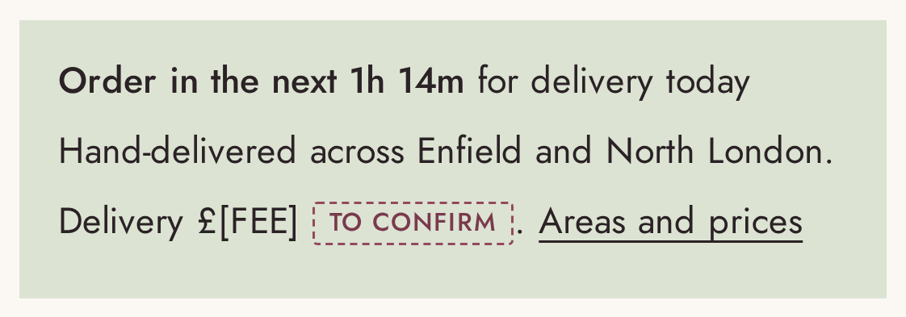
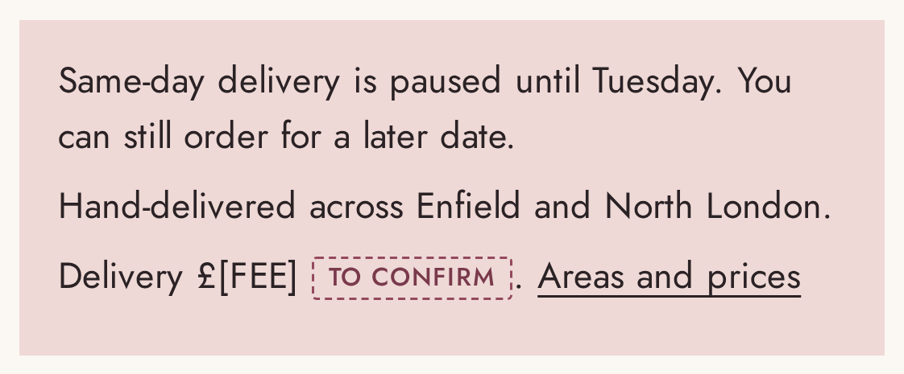

Everything here works from the Shopify app on your phone. Nothing you do here can break the website.
1 Add a new product
Open the Shopify app, tap Products.
Find one that's most like the new one and tap it. Tap ⋯ then Duplicate. (It copies the delivery settings for you.)
Change the name, the description and the price.
Under Media, delete the old photos and add yours. Put the square main photo first.
Set Status to Active and tap Save.
Tip: not sure about the words? Send Dilz your notes and he'll write it up for you.
Dilz adds a screenshot of your Products screen on setup day
2 Change a price
Products → tap the product.
Scroll to Price and type the new price. If it has sizes (Standard, Large), tap each size under Variants and change each one.
Tap Save. The website updates straight away.
Tip: "Compare-at price" is only for a genuine sale. Leave it empty otherwise.
Dilz adds a screenshot of the price box on setup day
3 Mark an order as done
Orders → tap the order. The delivery date and card message are on it.
Flowers you deliver: tap Mark as out for delivery when you leave, then Mark as delivered.
Parcels you post: tap Fulfil items, add the Royal Mail tracking number, tap Fulfil.
Tip: the customer gets an email at each step. You don't need to message them.
Dilz adds a screenshot of an order on setup day
4 Pause same-day delivery
Online Store → Themes → Customise.
Tap the settings icon → Same-day delivery.
Tick Pause same-day delivery and write your message, e.g. "Back on Tuesday". Save.
In the delivery app, block the same days so nobody can pick them.
To switch it back on: untick, Save.
4 What customers see

Normal: a live countdown to your cut-off.

Paused: your message instead. They can still order for later.
5 Reply to a review
On your website:Apps → Judge.me → Reviews. Tap the review, tap Reply, write, Publish.
On Google: open Google Maps → your profile → Reviews → Reply.
Good replies are short. Thank them by name and mention what they sent ("so glad the peonies made it for her birthday"). If someone's unhappy, say sorry and ask them to call you. Never offer anything in return for a review or for changing one. Google doesn't allow it, and UK review rules are strict.
Stuck? Call or message Dilz. Nothing on this page can break the website, and anything can be undone.